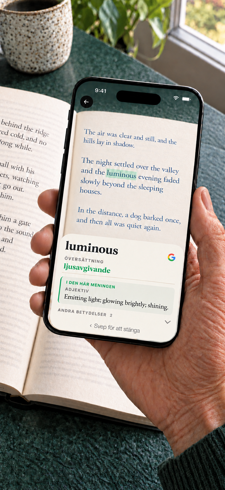

Booktionary · iPhone · Android
Kameraordbok för pappersböcker
Ett okänt ord ska inte dra dig ur en bra bok. Rikta mobilkameran mot ordet, slå upp betydelsen och fortsätt läsa. Du behöver inte skriva in ordet.
iPhone · iOS 17+ / Android 8.0+ · $1.99 USD

Android
Den engelska ordboken ingår. Hämta andra ordböcker och ordöversättningar innan du läser; installerade resurser fungerar offline. Inget konto krävs.
Ett köp omfattar alla tillgängliga ordböcker och paket med ordöversättningar. Ingen prenumeration eller köp i appen.
Valfri kontextfunktion för engelska böcker
På kompatibla telefoner med Android 12 eller senare och minst 8 GB RAM kan en valfri modell på enheten välja en ordboksbetydelse för engelska böcker. Modellen hämtas separat via Google Play. Appen kontrollerar prestanda och tillgängliga resurser före aktivering; minimikraven garanterar inte tillgänglighet. Ett val visas bara om det är klart när definitionen öppnas. Vanliga uppslag fungerar utan modellen.
Kamera och integritet
Kamerabilder och igenkänd text behandlas på din enhet. Google ML Kit samlar in tekniska diagnostik- och användningsdata. Hämtningar skickar vanliga anslutningsuppgifter till sina värdar. Väljer du Google-sökning skickas sökfrågan till webbläsaren och Google och kräver internet. Se integritetspolicyn för Android.
Kräver Android 8.0 eller senare och en kamera.
Bra att veta
Välj bokens språk, rikta kameran mot ett ord och håll stilla en kort stund. Svep bort definitionen för att fortsätta. Ordböckernas och ordöversättningarnas täckning varierar. Internet behövs för att hitta och hämta språkresurser. Tryck och håll på ett ord i en definition för att slå upp det, kopiera det eller söka på Google. Gå sedan tillbaka till det ursprungliga uppslaget. Du kan också söka på Google direkt från ett skannat ord.
iPhone · Hämta en gång. Läs offline.
Den engelska ordboken ingår. Hämta andra ordböcker, ordöversättningar och nödvändiga översättningsmodeller efter behov. Installerade resurser fungerar offline. Inget konto krävs. Google-sökning är valfri, öppnar webbläsaren och kräver internet. Söktexten skickas till Google endast när du väljer åtgärden. Kamerabilder stannar på din iPhone.
Ett köp omfattar alla tillgängliga ordböcker och paket med ordöversättningar. Ingen prenumeration eller köp i appen.
iPhone · Hitta betydelsen i meningen
Ord kan ha flera betydelser. På enheter som stöds använder Booktionary texten runt ordet för att hjälpa till att visa den relevanta ordboksbetydelsen först. Du kan också läsa de andra betydelserna.
iPhone · Mer hjälp med engelska böcker
Visa svenska ordöversättningar bredvid engelska definitioner. Du kan även aktivera översatta definitioner och växla mellan engelska och svenska. Hämta språkmodellerna som behövs före läsningen.

Ordböcker för 24 bokspråk
Danska, engelska, franska, indonesiska, italienska, japanska, kinesiska (förenklad och traditionell skrift), koreanska, kurdiska (kurmanji, latinsk skrift), malajiska (rumi), nederländska, norska bokmål, polska, portugisiska, rumänska, ryska, spanska, svenska, thailändska, tjeckiska, turkiska, tyska, ukrainska och vietnamesiska.
iPhone · Engelska ord kan översättas till de andra språken i listan samt grekiska. Grekiska böcker stöds inte. Kurdiska omfattar kurmanji med latinsk skrift, inte sorani; malajiska omfattar rumi, inte jawi. Översätt ord till engelska från alla 23 bokspråk som stöds utöver engelska. Engelska definitioner är valfria när kompatibla översättningsmodeller finns tillgängliga.
- EnglishInbyggd
- FrançaisLadda ned
- EspañolLadda ned
- PortuguêsLadda ned
- ItalianoLadda ned
- DeutschLadda ned
- DanskLadda ned
- NederlandsLadda ned
- Norsk (bokmål)Ladda ned
- РусскийLadda ned
- SvenskaLadda ned
- PolskiLadda ned
- ČeštinaLadda ned
- 日本語Ladda ned
- ไทยLadda ned
- RomânăLadda ned
- Tiếng ViệtLadda ned
- TürkçeLadda ned
- Bahasa IndonesiaLadda ned
- 中文 · 简体 / 繁體Ladda ned
- 한국어Ladda ned
- УкраїнськаLadda ned
- Kurdî (Kurmancî)Ladda ned
- Bahasa MelayuLadda ned
Support
Läs och slå snabbt upp ord